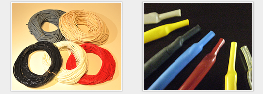

| 種類 | 構造、材質、用途、特徴 | 品種、品番等 |
|---|---|---|
| シリコンゴムチューブ | シリコンゴムを押出し成型したチューブ。難燃性に優れ、UL224規格VW-1に適合。300V、600V二種類がある。(E651U） | E651U、RSU、Sチューブ |
| シリコンワニスガラスチューブ | 難燃性、耐熱、耐寒、耐水、耐湿性等に優れる。 | S693F、S693VF、S693-600、HST-10U、HG-3E、NFG-1AC、HG-3 |
| ポリイミドチューブ | 耐熱性、耐屈曲性、接着性に優れ肉厚が薄く、シームレス、作業しやすい特長。 | PIT-S |
| 熱収縮チューブ | 電子線照射によるプラスチックの形状記憶高価を応用した熱収縮チューブ。電線、ハーネスの結束、絶縁保護などの用途に使われる。 | スミチューブ、ヴァーサフィットチューブ、ニシチューブ |
| ULチューブ | UL規格、CSA規格に基づいて作られた耐熱性、難燃性に優れた電機絶縁ビニールチューブ。電線等の電気的、機械的保護に使われる。 | 各種 |
| ビニールチューブ | 絶縁用一般チューブ。内部配線、保護、識別用。 | 各種 |
シリコンゴムチューブ
ニッカン工業（株）、日星電気（株）、（株）クラベ
シリコンワニスガラスチューブ
ニッカン工業（株）、大和テープ（株）、日星電気（株）、（株）クラベ
ポリイミドチューブ
古河電工（株）
熱収縮チューブ
住友電工ファインポリマー（株）、タイコエレクトロニクス、西日本電線（株）
ULチューブ、ビニールチューブ
（株）共和、（株）イワセ、北港化成（株）
記載されていない商品でもまずは弊社までお問い合わせ下さい。
各メーカーから御希望の材料をお探しいたします。